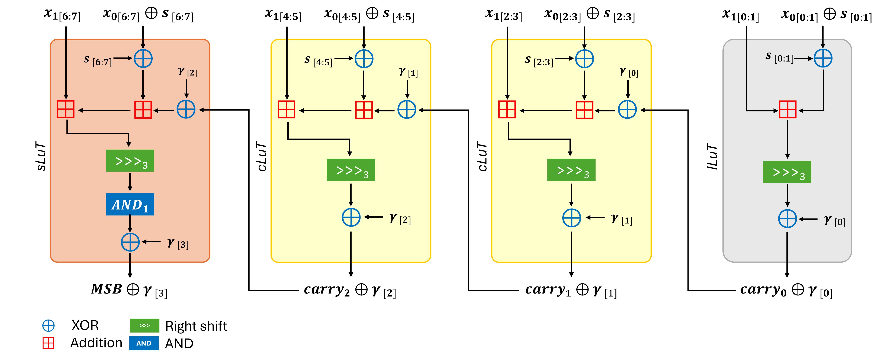

Publications
Selected publications and research works on cryptographic implementation security, side-channel analysis, fault injection attacks, masking, and post-quantum cryptography.
Selected publications and research works on cryptographic implementation security, side-channel analysis, fault injection attacks, masking, and post-quantum cryptography.